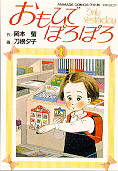
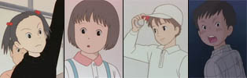
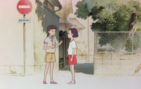
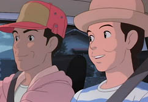
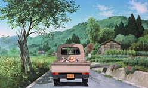
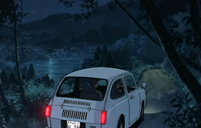
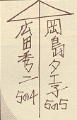

Only yesterday -
Omohide
Poro Poro
(«Ayer nomás» o
«Recuerdos del ayer» o «Goteo de recuerdos»)
1991 · Película · 1:58 hs
Dirección: Isao Takahata
Música: Katsu Hoshi
Producción: Hayao Miyazaki
Diseño de personajes: Yoshifumi
Kondo
Guión: Takahata,
sobre manga de Hotaru Okamoto
Omohide Poro Poro, segunda película de Takahata en Ghibli, realista y evocativa; acaso su obra maestra, aunque muy poco conocida.
La protagonista es Taeko, que con sus veintisiete años de edad recuerda la niña que fue; los recuerdos por un lado y las circunstancias de unas vacaciones que pasa trabajando en el campo la conducen a replantearse su vida.
 La trama
transcurre en dos planos: por un lado el presente: la Taeko adulta que
para cumplir el sueño infantil de huir de su Tokio natal
a
pasar las vacaciones en el campo, va a trabajar en la granja de sus
cuñados, cosechando cárdamo y aprendiendo algo sobre la naturaleza y la
vida campesina. Por otro lado, el pasado: el recuerdo se centra en
Taeko a los diez años, y todos los pequeños eventos de aquella época
que vuelven involuntariamente a ella cuando emprende el viaje en
tren.
La trama
transcurre en dos planos: por un lado el presente: la Taeko adulta que
para cumplir el sueño infantil de huir de su Tokio natal
a
pasar las vacaciones en el campo, va a trabajar en la granja de sus
cuñados, cosechando cárdamo y aprendiendo algo sobre la naturaleza y la
vida campesina. Por otro lado, el pasado: el recuerdo se centra en
Taeko a los diez años, y todos los pequeños eventos de aquella época
que vuelven involuntariamente a ella cuando emprende el viaje en
tren.
Los dos planos, que se alteran a lo largo de la obra, aparecen diferenciados en el dibujo: aunque ambos tienden al realismo, las escenas del pasado tienen una tonalidad más clara y levemente difuminada.

En la primera parte de la película predominan las escenas del pasado. En la segunda, toma preponderancia el presente; y gana lugar Toshio, un muchacho campesino que parece discretamente atraído por Taeko. Los hilos se unen en una especie de epílogo, ya durante los títulos finales -y que curiosamente constituye el climax de la obra.
El guión, y la caracterización de Taeko niña, están basado en un manga (comic japonés), de tinte adulto intimista, una evocación de los tiempos de infancia; guión de Hotaru Okamoto y Yuko Tone. En Buta se pueden ver algunas imágenes originales, y algunos detalles de su adaptación.La idea del otro plano, el presente, y su relación, es entera concepción de Takahata.
Recientemente se ha anunciado la edición en español del manga.
1. El pasado: 1966, Tokio
Además de Taeko Okajima, con sus 10 años, tenemos a su familia y sus companeros de escuela. El padre, distante, al uso de los jefes de familia de aquella cultura; la madre, también típica ama de casa, atenta a los problemas escolares de su hija menor. Taeko tiene dos hermanas mayores: una entrando a la adolescencia (Yaeko) y otra saliendo (Nanako). Taeko tiene una relación más difícil con la menor... como también es típico. También está la abuela, de pocas palabras.
Entre sus compañeras de escuela, están: Tsuneko, la alumna modelo y carácter más fuerte; Rie, de cuerpo grande  y maduración precoz, tranquila; Toko y Aiko aparecen menos perfiladas. Entre los varones, están Hirota, el campeón de béisbol de la otra división, el primer amor de Taeko; y Abe, el chico pobre y violento que es transferido temporariamente a la escuela, y que es la tortura de Taeko -y motivo de culpa después.
2. El presente: 1982, Yamagata (distrito rural de Japón, 200 km al norte de Tokio)
Taeko tiene 27 años, trabaja en periodismo en Tokio. Aunque su familia está preocupada por su soltería, ella aparece despreocupada al comienzo, sólo interesada en las próximas vacaciones campestres. En el fondo, presiente que tiene que decidir su camino en la vida. Toshio, de parecida edad (quizás algo menor) que Taeko, relacionado con los cuñados de Taeko, ha decidio recientemente abocarse a la agricultura. Afectuoso, sencillo y con sentido común, se lo adivina atraído por la chica de Tokio, pero sabe mantener las distancias. El matrimonio de granjeros, Kazuo y Kioko, son los cuñados de Nanako, la hermana de Taeko. Viven con la madre de él, que ayuda en el trabajo, y con su hija adolescente, Naoko.
En lo visual, es una de las películas más impresionantes y delicadas de Ghibli. Los belleza de los paisajes (rurales y realistas en el presente , urbanos y estilizados en el pasado) es notabilísima, nada convencional y muy integrada con los climas humanos -y con la música. El amanecer brumoso en la cosecha, los caminos de tierra sinuosos en la noche lluviosa, esol que se pone sobre las calles de la ciudad al volver del colegio a casa, y ese atardecer melancólico y multicolor en la calle comercial... la galería de imágenes es una pequeño muestrario.
Y en lo emocional es, para mí, de lo más potente de Ghibli. No sólo por el final; mencionemos dos escenas perfectas y típicas: el primer amor (toda la secuencia, desde las niñas que avergüenzan al chico, hasta el "vuelo" de Taeko, pasando por ese encuentro con el sol al fondo) y la caminata agridulce de Taeko con la madre, por la calle comercial, cuando ella se consuela de sus penas con la canción infantil de TV. Y hay muchas otras.
Pero es cierto que, para mí y para muchos, lo más grande es el final. Takahata, queda dicho, sabe redondear sus películas; y este es el mejor ejemplo. Como toda la secuencia transcurre durante los títulos finales, no abundaremos en detalles. Pero apuntemos que, acaso, una de las claves de la emoción devastadora que logra infundir la escena reside en la inversión de la mirada: de pronto, y al revés del resto de la película, es la niña la que mira a la adulta. Y, aparte de lo que podríamos llamar el desenlace, la mirada del último segundo deja un impresión tan penetrante como indefinible.
Aunque la considero la obra cumbre de Takahata, puedo entender que sea tan poco conocida, y que a muchos fans aburra o no impresione demasiado. Algunos puntos:
- El ritmo es muy lento. Los monólogos y diálogos de Taeko adulta parecen en ocasiones algo deshivanados o confusos; algunos encuentran incosistente la trama global del "presente", los cuestionamientos de Taeko, la relación con el tema del campo; y su relación con Toshio, poco convincente.
-  Si la escenografía es impresionante, la animación es discreta y el diseño de personajes es más discutible. Se trató de dar rasgos menos idealizados a los personajes (de hecho los protagonistas se diseñaron en base a personas reales), marcando así otra diferencia entre el plano del pasado (dibujos más idealizados, y por lo mismo más tradicionales) y el presente; algunos detalles de intención naturalista, sobre todo los pómulos marcados de Taeko, que parecen avejentarla demasiado, no son del gusto de todos.
- Los recuerdos infatiles son muy localizados, en tiempo y espacio: Tokio, 1966. Hay muchas referencias a una cultura que nos es ajena, o de arduo acceso.
- Los fans más jóvenes, que son mayoría, tienen previsiblemente menos puntos de contacto. Y los amantes de la acción y la fantasía pueden sentirse exasperados, no sólo con la trama lenta y sinuosa del presente sino con las trivialidades de los recuerdos de infancia.
-  No es un producto muy atrayente para las distribuidoras comerciales. Una película de animación no destinada al público infantil (no tanto por las menciones al tema de la primera menstruación; simplemente, no es accesible a un niño), y ni siquiera muy seductora para los jóvenes... Y además del público incierto, el localismo... Se entiende que sea una de las pocas películas de Ghibli no comercializadas, ni siquiera en DVD, en occidente.
- Las únicas traducciones en español son de fansubs; suele suceder que estos subtítulos, provenientes a menudo de retraducciones sobre el inglés, están plagados de errores que dificultan la comprensión de la trama.
Música
La música original, de la que se destaca la dulce introducción en piano, es de Katsu Hoshi. Pero buena parte de la banda sonora se apoya en composiciones no originales, muy variadas y de origen mayormente occidental. Enumeramos:
- Primera escena en el colegio: Música folk israelí
- Comida en el colegio: Rapsodia húngara 5, de Brahms.
- Partido de béisbol: "Hoshi no Flamenco", un hit del momento en Japón, basada en un aire flamenco; es la misma canción que cantan antes las niñas, para burlarse de Hirota.
- Taeko flota en el aire: es el tema de una serie dramática ("Ohanahan"), enormemente exitosa en 1966.
- Taeko y Rie caminan llevando el cesto de residuos: "Turkey in the Straw"
- La "música húngara de campesinos" que Toshio escucha en el auto, es de "Muzsikas", un grupo folk de Budapest. Luego aparecen dos canciones más de este grupo. 
- Poco antes de llegar Taeko al campo: Flauta de pan, por Gheorghe Zamfir, de Rumania. Reaparece varias veces, acompañando el tema del campo y Toshio.
- Música coral en la cosecha al alba: el coro de las Voces Búlgaras.
- Taeko da masajes al padre: "La trucha" de Schubert.
- En Zaoh: Música de Kitaro.
- En el auto con Toshio: "Stornelli", canción tradicional italiana. La visión imaginada por Taeko es de un campo en la Toscana.
- El viejo que sube al tren: En su equipo suena "Suki ni Natta Hito" , canción muy popular en los setenta. La cantaba Harumi Miyako, la misma que cantará el tema final de la película.
En cuanto al tema final, es la canción norteamericana The rose, que fue cantada por Bette Midler en la película del mismo nombre (en la cual a su vez personificaba a Janis Joplin). Acá la canta Harumi Miyako, con una letra compuesta especialmente para la película por el mismo Takahata. Traducción aproximada:
El amor es un río, dicen, que en su corriente va gastando la ternura.
El amor es un puñal, dicen, que corta el alma en cien pedazos.
El amor es una sed imposible de apagar, dicen, pero también...
el amor es una flor, es la flor de la vida, y tú eres la semilla.
Por temor a las burlas, tu corazón no se atreve a danzar.
Por miedo a despertar, tu sueño nunca levanta vuelo.
Tu corazón no se entrega, por miedo a ser robado.
Por miedo a morir, tu corazón no puede vivir.
Larga noche, en soledad; largo camino, en soledad.
Si el amor no llega cuando tú lo esperas,
no olvides que él está, bajo la nieve del invierno.
Y en primavera, al calor del sol, la semilla brota y se hace flor.
Algunas referencias culturales, para ayudar a entender algunos puntos (otros están explicados en la página de preguntas ).
- El ananá o piña era una fruta exótica en esa época (1966), las frutas importadas eran muy caras y difíciles de conseguir. La mayoría de los japoneses sólo conocían el ananá enlatado.
-
 Los programas infantiles que Taeko ve
en TV son reales. El show con títeres se llamaba "Hyokkori
Hyotanjima"
(La isla de la calabaza), y era inmensamente popular
entre los niños de la época (1966). También son reales todos los
personajes y las canciones citadas.
Los programas infantiles que Taeko ve
en TV son reales. El show con títeres se llamaba "Hyokkori
Hyotanjima"
(La isla de la calabaza), y era inmensamente popular
entre los niños de la época (1966). También son reales todos los
personajes y las canciones citadas.
- La obra de teatro Kobutori Jii-san , la obra en la que Takeo toma parte como "niño de la villa número 1" es una historia folkórica tradicional, que se encuentra con muchas variantes en todo el mundo.
- El detalle de las niñas que caminan "marcando el paso" es una de las muchas alusiones a la época. Proviene de una propaganda de TV de los EEUU, en la que aparecían mujeres caminando a grandes zancadas; este detalle, que pretendía dar una idea de energía y confianza femenina, despertó la curiosidad de los televidentes japoneses, y las niñas desarrollaron una especie de imitación exagerada para caminar juntas.
- La hermana de Taeko, por teléfono, le recomienda darse "la buena vida" (oishii seikatsu). Es una frase hecha del momento, también originada en un comercial.
- En la escena del debate en el colegio, los niños varias veces usan frases hechas, lugares comunes de la TV y la radio de la época, y canciones de moda ("¡Bien dicho!" - "somos muy felices" - "me han dado!"...).
- A la derecha del "paraguas del amor" se puede ver un dibujo del Tetsujin 28go (Gigantor), el primer robot gigante del anime.
- También el brillo que aparece en los ojos de Taeko tras el encuentro con Hirota es una alusión a un recurso convencional de los manga románticos de la época.
- Ya en el presente (1982), la moda de las zapatillas Puma también es característica de la época, como la alusión a la película E.T.
- - El dibujo en la pared, cuya autoría se endilga a Hirota, se llama "Ai Ai Gasa" y es un símbolo tradicional del amor en Japón, como el corazón en otras culturas. Representa un paraguas estilizado, y suele escribirse el nombre de cada enamorado a cada lado (recordar que en japonés se escribe verticalmente). En el dibujo en cuestión aparecen los nombres de Hirota y de Taeko, con el grado y división de cada uno debajo. El símbolo, oportunamente, reaparece al final de la película.
- "Julie of the tigers": Fue un grupo de rock, popular entre adolescentes japoneses, sobre todo su lider, Kenji "Julie" Sawada. Debutó en 1967.
- El Teatro Takarazuka es una escuela de teatro japonesa, compuesta exclusivamente por mujeres.
- "Eso" que Taeko niña no se decide a comprar, es una especie de bombacha equipada con una toalla higiénica, para las primeras menstruaciones. Es otro episodio proveniente del manga: Taeko se sentía avergonzada de comprarla en el colegio, e intentó conseguir una de su hermana mayor, sin éxito
- La broma de levantar la falda de las niñas para mirar fue efectivamente una moda en los colegios en los '60. Por este motivo, muchas niñas llegaban a asistir al colegio con pantalones de gimnasia debajo.
- Los detalles del viaje son escrupulosamente realistas.
En su viaje a Yamagata, Taeko ha
 tomado el tren suburbano de la línea "Eidan
Marunouchisen" (la más antigua, conocida por sus franjas rojas y
blancas)
para llegar a la estación Uenoeki, la más grande
de Japón; aquí es donde pasa frente al mercado de frutas. Y acá
abordará la línea
Akebono 3, un expreso nocturno con camarotes,
que sale a las 10:24pm y llega a Yamagata a las 3:51AM.
Cuando regresa, toma el tren una estación distinta (Takase Station),
distante 10 minutos de la anterior.
tomado el tren suburbano de la línea "Eidan
Marunouchisen" (la más antigua, conocida por sus franjas rojas y
blancas)
para llegar a la estación Uenoeki, la más grande
de Japón; aquí es donde pasa frente al mercado de frutas. Y acá
abordará la línea
Akebono 3, un expreso nocturno con camarotes,
que sale a las 10:24pm y llega a Yamagata a las 3:51AM.
Cuando regresa, toma el tren una estación distinta (Takase Station),
distante 10 minutos de la anterior. - - La planta es la que cosecha Taeko se llama Benibana (safflower) , en español , cárcamo o azafranillo. Proveniente de egipto, su flor era empleada para teñir, para fabricar cosméticos y como sucedáneo del azafrán. No es muy conocida.
Disponibilidad: es una de las pocas películas de Ghibli más difíciles de encontrar, ha tenido muy pocas ediciones en occidente, y ninguna en español. Sólo cabe recurrir a p2p (torrent o emule). Acá dejo subtítulos en español, revisados.
Al no haber sido editada en español, no tiene un título establecido en nuestro idioma. Suele emplearse el título inglés (traducido o no), o el original japonés, de traducción incómoda: "Omohide" significa "recuerdos"; "poro-poro", (algo así como "goteo") es una expresión onomatopéyica que refiere al sonido de las gotas de agua, frecuentemente aludiendo a lágrimas.
Más información sobre la película: en Nausicaa.net y Buta connection; también en Buta hay más imágenes.